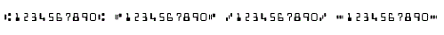

<div id="jsn-maincontent" class="span9 order1  row-fluid">
					<div id="jsn-maincontent_inner">
						<div id="jsn-centercol"><div id="jsn-centercol_inner">
									<div id="jsn-mainbody-content" class=" jsn-hasmainbody">
								<div id="jsn-mainbody-content-inner1"><div id="jsn-mainbody-content-inner2"><div id="jsn-mainbody-content-inner3"><div id="jsn-mainbody-content-inner4" class="row-fluid">
								
										
								
								<div id="jsn-mainbody-content-inner" class="span12 order1 ">
		
										<div id="jsn-mainbody">
										<div id="system-message-container">
	</div>

										<div class="item-page" itemscope itemtype="https://schema.org/Article">
	<meta itemprop="inLanguage" content="en-GB" >
	
		
						
		
	
	
		
								<div itemprop="articleBody">
		<p></p>
<h1 style="text-align: center;">Communication with computers - automatic methods</h1>
<p style="margin-top: 10px; line-height: 16.3636360168457px;"><strong style="line-height: 1.5;">Introduction<br></strong>Users can also interact with computers automatic data input methods.&nbsp;These are methods where data is collected and processed and prepared beforehand in some way so that it can be directly entered into a computer system when needed. We will see some examples of this to illustrate what we mean.</p>
<p style="line-height: 16.3636360168457px;"><strong>Optical Mark Readers (OMR)</strong><br>Data sheets are prepared and people put marks in set places to indicate a choice. They are used, for example, in multiple-choice tests because the answers can be scanned in and a pupil's mark calculated by the computer - less work for the teacher. They can be used to capture answers to questions on a questionnaire, or to select numbers on a lottery ticket. Some applications are not suitable for OMR. For example, you wouldn't collect names using OMR because you would have to provide 26 places for a mark to be made for each letter in the name! They are really only suitable when a small number of choices are available.</p>
<p style="line-height: 16.3636360168457px;">When OMR sheets are completed, they can be scanned in automatically and the results produced straight away. The data doesn't have to be typed in manually, which could introduce typing errors, takes time and can cost a lot of money if there is a lot of data to enter. If you are not experienced filling in OMR sheets, they can cause problems. It is easy to make a mistake. If this happens, you need to know how to correct it on the OMR sheet. There is usually an elaborate set of procedures to follow if this situation arises. Estimates of the number of OMR sheets rejected when used in questionnaires range from 10% up to 30%! In addition, if the OMR sheets themselves get torn or creased, then they may get rejected.</p>
<p style="line-height: 16.3636360168457px;"><strong>Optical Character Recognition (OCR)</strong><br>A page of writing or data is first scanned on a scanner (or you can take a photo of text or data on your mobile phone and then use a free OCR app to convert it). A very bright light is shone on the text and the white and dark space caused by the letters on the page reflect different amounts of light back. This is measured and used to produce a bit map picture of the writing. It is not yet a word processing document. Some OCR software is then run on the picture. This scans the picture looking for patterns that represent characters on a keyboard. As it finds these patterns, it transfers them to a text file. When the whole picture has been scanned, a text file will have been produced that can then be opened in a word processor or other applications.&nbsp;</p>
<p style="line-height: 16.3636360168457px;">OCR can be used to transfer spreadsheet information directly into a spreadsheet or to get textual information from books into a word processor. You could easily use this method to scan the complete works of Shakespeare, for example, and then you could analyse each work, to check that it has really been done by Shakespeare! You could use this method to transfer human knowledge from books to computer to allow it to then be searched easily, transferred and distributed, for example.&nbsp;OCR is used to read postcodes on letters by the post office to enable speedy and cost-effective sorting of mail. It can be used to convert written documents into a form that could then be output via speakers to people with problems with vision. Although software is becoming ever more powerful, OCR is still only reliable for typed work. It still struggles to recognise handwriting.</p>
<p style="line-height: 16.3636360168457px;"><strong>Bar codes</strong><br>Bar codes are made up of black and white striped lines. The lines represent data in coded form. The data held in a bar code can be retrieved by using a laser scanner. The data obtained can then be used to look up further information held on computer.&nbsp;<br>Bar codes can be attached to libraries to speed up taking out and returning books. Membership systems that require members’ details to be retrieved could employ barcodes. Supermarkets could use them for stock control systems, to speed up the checkout process and to produce itemised receipts. Bar code systems have built in validation techniques that greatly reduce errors. The data scanned can be integrated into management information systems so that, for example, managers can tell which books are never taken out of a library and should be removed, which members never attend an event or which products in a supermarket sell best on Sundays. In supermarkets, bar codes are an integral part of the stock control system. One problem with any system that is completely reliant on computerised systems, however, is what to do when the system breaks down. A bar code for a product in a supermarket will typically contain:</p>
<ul style="line-height: 16.3636360168457px;">
<li style="list-style-type: none;">
<ul style="list-style-type: disc;">
<li>the country of origin of the product</li>
<li>the manufacturer's identity number</li>
<li>the code for the actual product</li>
<li>the check digit, used to check that a number has been scanned in correctly.</li>
</ul>
</li>
</ul>
<p style="line-height: 16.3636360168457px;"><strong>Magnetic stripe cards and smart cards</strong><br>Data can be entered into computer systems by using cards that have a magnetic stripe on them. The magnetic stripe holds coded information. This can be retrieved by 'swiping' the card through a magnetic card reader. The information can then be used directly, or used to retrieve more information from a central computer.</p>
<p style="line-height: 16.3636360168457px;">This type of data input is typically used for credit cards, debit cards, loyalty cards, membership cards and security access cards. They are quick to use, can be used many times, are cheap to produce and the important information held on them cannot be read unless you have the right equipment. Magnetic stripe cards can be read but not written to. The data is placed on the card when it is made. For this reason, smart cards have become more widely used. These are cards that have an electronic chip on them. This can be used to record each time a transaction occurs, for example. In other words, smart cards can be written to as well as read from! Interestingly, cards with magnetic stripes typically have some details written on the card as well so that a person can read them. It might have the name of the owner of the card on it, in case the card gets lost. It might have the card number on it, in case the owner of the card wants to use it to buy something over the Internet or phone.</p>
<p style="line-height: 16.3636360168457px;"><strong>Magnetic Ink Character Recognition (MICR)</strong><br>When banks produce cheque books, they print on the bottom of the cheque the sort code of the bank, the account number and the cheque number. These numbers are printed in magnetic ink because the cheques can then be read automatically once a cheque has been written. It doesn't matter if the cheque gets creased or a little dirty because the data on them can still be read by the special magnetic ink readers.</p>
<p style="line-height: 16.3636360168457px;"></p>
<p style="line-height: 16.3636360168457px;">When a cheque has been written, it will be paid in to the bank. It cannot yet be read automatically, because the date and amount have been written on by hand. When a cheque is paid into a bank, an operator prints on the cheque how much it is for and the date it was paid in. When all of the cheques for that day have been collected together, they are loaded up into a special machine that batch processes them - it reads each cheque and adjusts all the accounts as necessary. MICR cannot be considered completely automatic because some of the data must be prepared before it can be entered into a computer. It is an example of a cross between an automatic data input system and a manual one.</p>
<p style="line-height: 16.3636360168457px;"><strong>Data logging</strong><br>A classic example of an automatic data entry method is data logging. Consider an experiment where a pupil wants to know how the temperature of a computer room varies over 24 hours. They would need to select a transducer to read the temperature. In this case, they select a thermistor. This is an electronic device with a special property. The output voltage from the thermistor constantly varies, depending upon the temperature. It is known as an ‘analogue transducer’ because there are an infinite number of outputs from it. The pupil knows that the computer is a digital device. They know that you cannot simply connect an analogue device to a digital device. You have to convert the analogue signal first using an ‘interface’. In this case, the interface required is an Analogue to Digital Converter (ADC). This takes the analogue signal used by the thermistor and converts it into the digital signals needed by the computer. The thermistor is attached to the ADC and the ADC is attached to the computer.</p>
<p style="line-height: 16.3636360168457px;"></p>
<p style="line-height: 16.3636360168457px;"><strong>An Analogue to Digital Converter in use.<br></strong>We have said that an interface is often required in control and data logging applications. You certainly need one if you want to attach any analogue transducers to a computer. An interface may perform other functions:</p>
<ul style="line-height: 16.3636360168457px;">
<li style="list-style-type: none;">
<ul style="list-style-type: disc;">
<li>An interface may convert voltage signals from analogue into digital (ADC) or digital into analogue (DAC).</li>
<li>An interface may be used like a switch, so that e.g. a small dc voltage from the computer can be used to switch on and off a large motor that uses 240Vac.</li>
<li>An interface may provide compatible physical connections for a computer and the devices that need to be connected to it. Devices may use plugs and sockets that are physically different to a computer’s and so they cannot be directly attached to it. They have to go via an interface.</li>
</ul>
</li>
</ul>
<p style="line-height: 16.3636360168457px;"><strong>Sample times</strong><br>The pupil wants to know how the temperature varies in a 24-hour period. A suitable output for this would be a graph. If the pupil set up the computer to take a reading every 10 minutes, then the computer would take 6 readings an hour, or 144 readings in 24 hours. This sample would be more than sufficient to produce a good graph. Of course, the pupil could have set up the computer to take hundreds of readings every second! This would have been unnecessary in this case because it wouldn't have told the pupil any extra information. Taking readings at appropriate times is known as ‘sampling’ or ‘taking a sample’. The trick is to be able to justify for any given problem what an appropriate time interval between sample readings is!</p>
<p style="line-height: 16.3636360168457px;"><strong>Data logging and satellite communication</strong><br>Suppose we have a data logging system set up on the top of a mountain, to record the temperature. The data logger might take a reading every hour and store the value. How can the recorded values be sent back without having to send a person up to collect the readings? It can be achieved using satellite technology. A transmitter attached to the data logger sends a microwave signal to one of a small number of geostationary satellites that cover the planet. The message is amplified and retransmitted back to Earth. The signal is possibly bounced back up to another satellite and down again, so that the data is passed around the planet. The data is then collected and analysed by computer and possibly converted into graphs so trends can be examined.</p>
<p style="margin-bottom: 10px; line-height: 16.3636360168457px;">We can log data in any place where people couldn’t realistically go for long periods, perhaps because they are dangerous, such as in a nuclear reactor, in space or at the bottom of an ocean. Readings can potentially be taken 24/7 and are likely to be far more accurate than readings people take. We might also need data logging equipment where things happen so quickly that people couldn’t take enough readings to analyse, for example, in scientific experiments. Of course, the equipment might breakdown so backup equipment may be necessary.</p>
<p class="NormalContent"></p> 	</div>

	
							</div>

									</div>
				
							</div>
							
				        							
							
							</div></div></div></div></div>			
							
							
		        				</div></div> 
				</div></div>